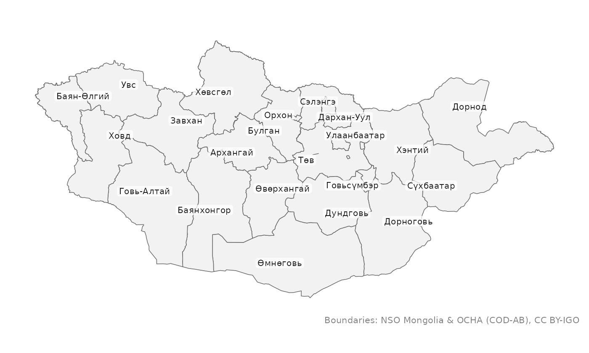
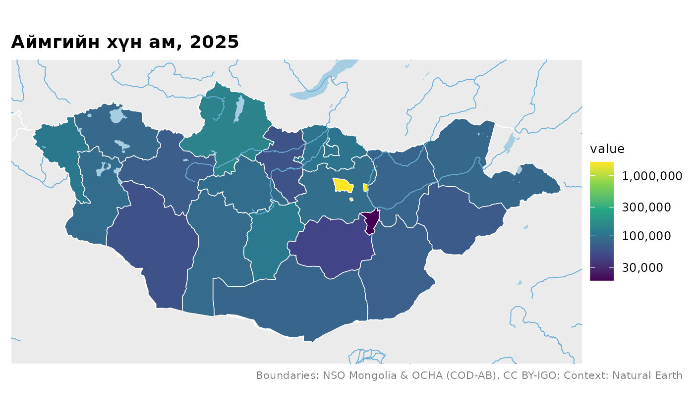
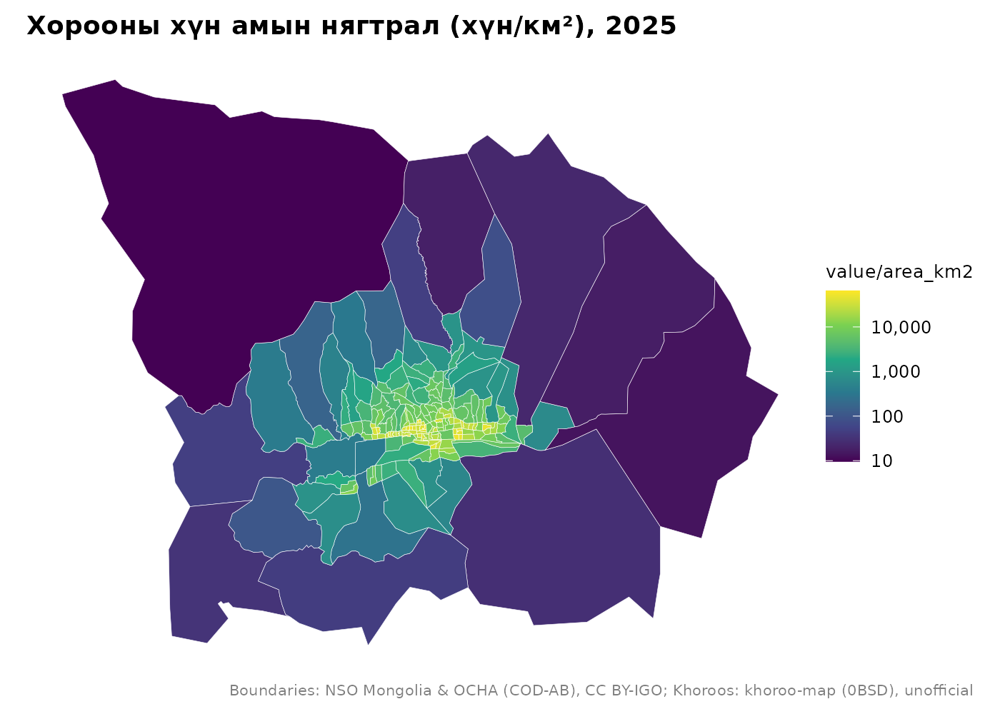
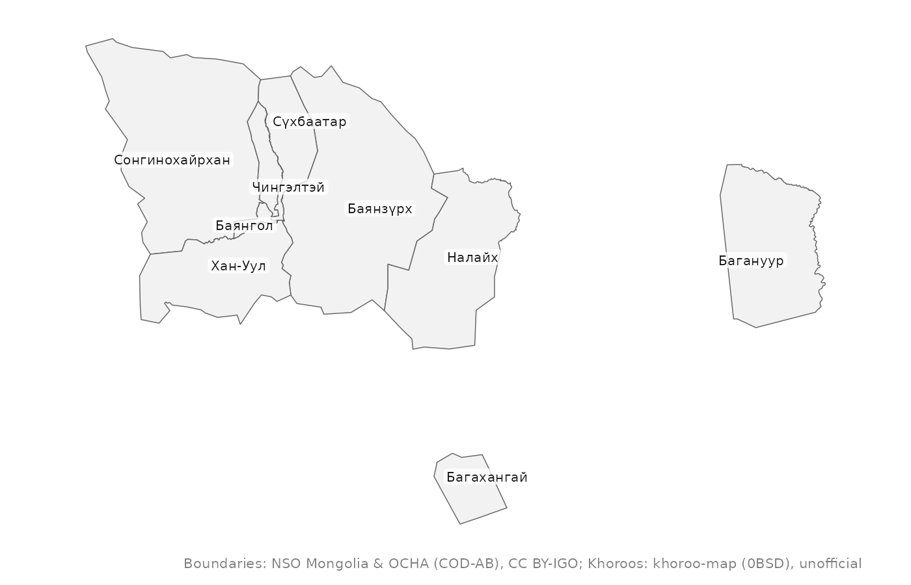

Монгол Улс, Улаанбаатар хотын газрын зураг R програмд — нээлттэй байгаа засаг захиргааны бүх түвшинд. Нэг багц, эхлэхэд юу ч татах шаардлагагүй, газар нутгийн нэрийг хэрхэн бичсэн ч танина.
| Түвшин | Функц | Нэгжийн тоо |
|---|---|---|
| Улс | mn_country() |
1 |
| Эдийн засгийн бүс | mn_regions() |
5 |
| Аймаг ба нийслэл | mn_aimags() |
22 |
| Сум ба Улаанбаатарын дүүрэг |
mn_soums(), mn_ub_districts()
|
330 + 9 |
| Улаанбаатарын хороо | mn_khoroos() |
204 |
| Баг | mn_bags() |
~1,650 багийн код, нэр; хилийг ҮСХ-оос хүсэлтээр авна |
Функц бүр ижил баганатай sf хүснэгт буцаана (код, англи ба монгол нэр, харьяалах нэгж, талбай), тиймээс аль ч түвшний газрын зурагтай адилхан ажиллана.
Суулгах
# install.packages("pak")
pak::pak("temuulene/mongolmaps")Анхны газрын зураг
library(mongolmaps)
options(mongolmaps.lang = "mn") # нэрийг монголоор
mn_map(label = TRUE)
mn_map() Монголд тохирсон проекц сонгож, нэрийг хил дотор нь байрлуулж, өгөгдлийн эх сурвалжийг тэмдэглэнэ.
Өөрийн өгөгдлөө газрын зураг дээр
mn_join() хүснэгтийг хил хязгаартай холбоно. Газрын нэрийг ямар ч галигаар, кирилээр, эсвэл Үндэсний статистикийн хорооны (ҮСХ) хүснэгтийн кодоор өгч болно. ҮСХ-ны хүснэгт дэх нийт дүн, бусад түвшний мөрийг автоматаар хасна.
pop <- mn_example_population[mn_example_population$Year == 2025, ]
pop_map <- mn_join(pop, by = "Region", level = "aimag")
mn_map(pop_map, fill = value, trans = "log10", context = TRUE,
title = "Аймгийн хүн ам, 2025")
Улаанбаатар — хороо хүртэл
# Төвийн зургаан дүүрэг, товчилсон нэрээр
central <- c("БГД", "БЗД", "ЧД", "ХУД", "СХД", "СБД")
khoroo_pop <- mn_join(pop, by = "Region", level = "bag", within = central)
mn_map(khoroo_pop, fill = value / area_km2, trans = "log10",
title = "Хорооны хүн амын нягтрал (хүн/км²), 2025")
Хороог дугаараар нь, дүүрэг болон бусад нэгжийг нэрээр нь тэмдэглэнэ:
mn_map(mn_ub_districts(), label = TRUE)
Нэрийг ямар ч бичлэгээр
mn_match(c("Khuvsgul", "Hovsgol", "Khövsgöl", "Хөвсгөл", "MN-041", "267"))
#> [1] "MN67" "MN67" "MN67" "MN67" "MN67" "MN67"
mn_match("Сүхбаатар дүүрэг")
#> [1] "MN1119"
mn_match("Баян-Уул", level = "soum", within = "Дорнод")
#> [1] "MN2110"
mn_codes("soum", within = "Ховд")
#> # A tibble: 17 × 16
#> pcode name name_en name_mn name_mns level type number iso_code nso_code
#> <chr> <chr> <chr> <chr> <chr> <chr> <chr> <int> <chr> <chr>
#> 1 MN8401 Жаргала… Jargal… Жаргал… Jargala… soum soum NA <NA> 18401
#> 2 MN8404 Алтай Altai Алтай Altai soum soum NA <NA> 18404
#> 3 MN8407 Булган Bulgan Булган Bulgan soum soum NA <NA> 18407
#> 4 MN8410 Буянт Buyant Буянт Buyant soum soum NA <NA> 18410
#> 5 MN8413 Дарви Darvi Дарви Darvi soum soum NA <NA> 18413
#> 6 MN8416 Дөргөн Durgun Дөргөн Dörgön soum soum NA <NA> 18416
#> 7 MN8419 Дуут Duut Дуут Duut soum soum NA <NA> 18419
#> 8 MN8422 Зэрэг Zereg Зэрэг Zereg soum soum NA <NA> 18422
#> 9 MN8425 Манхан Mankhan Манхан Mankhan soum soum NA <NA> 18425
#> 10 MN8428 Мөнххай… Munkhk… Мөнхха… Mönkhkh… soum soum NA <NA> 18428
#> 11 MN8431 Мөст Must Мөст Möst soum soum NA <NA> 18431
#> 12 MN8434 Мянгад Myangad Мянгад Myangad soum soum NA <NA> 18434
#> 13 MN8437 Үенч Uyench Үенч Üyench soum soum NA <NA> 18437
#> 14 MN8440 Ховд Khovd Ховд Khovd soum soum NA <NA> 18440
#> 15 MN8443 Цэцэг Tsetseg Цэцэг Tsetseg soum soum NA <NA> 18443
#> 16 MN8446 Чандмань Chandm… Чандма… Chandma… soum soum NA <NA> 18446
#> 17 MN8449 Эрдэнэб… Erdene… Эрдэнэ… Erdeneb… soum soum NA <NA> 18449
#> # ℹ 6 more variables: parent_pcode <chr>, region_pcode <chr>,
#> # aimag_pcode <chr>, soum_pcode <chr>, area_km2 <dbl>, has_geometry <lgl>Бусад боломж
- Интерактив газрын зураг:
mn_leaflet(mn_khoroos(), fill = area_km2). - Нэрийг англиар:
lang = "en", эсвэлoptions(mongolmaps.lang = "en"). - Бүрэн нарийвчлалтай хил:
resolution = "high"(нэг удаа татаж, хадгална). - Суурин, гол мөрөн, нуур, хөрш орнууд:
mn_settlements(),mn_rivers(),mn_lakes(),mn_neighbours(). - OpenStreetMap-аас зам, төмөр зам, нисэх буудал, суурин газар:
mn_roads(within = "Улаанбаатар"),mn_railways(),mn_airports(),mn_places()(нэг удаа татаж, хадгална). - Өндөршил, рельефийн сүүдэр, газрын бүрхэвч, хүн амын тор (terra багцтай):
mn_map(mn_elevation()),mn_landcover(),mn_population(2025), мөн аймаг, сум, хороогоор нэгтгэхmn_zonal(). - Тусгай хамгаалалттай газар:
mn_protected_areas(). - Жижиг олон зураг:
geofacet::facet_geo()-д зориулсанmn_aimag_grid.
Өгөгдлийн эх сурвалж
| title | provider | license |
|---|---|---|
| Administrative boundaries (country to soum) | National Statistics Office of Mongolia; OCHA | CC BY-IGO 3.0 |
| Ulaanbaatar khoroo boundaries | khoroo-map (GitHub Tuvshin-Level/khoroo-map) | 0BSD |
| Unit codes and names down to bag level | National Statistics Office of Mongolia | Open data (NSO) |
| Capital, aimag and soum centres | Wikidata | CC0 1.0 |
| Neighbouring countries, major rivers and lakes | Natural Earth | Public domain |
| Full-resolution administrative boundaries | National Statistics Office of Mongolia; OCHA; khoroo-map | CC BY-IGO 3.0; 0BSD (khoroos) |
| Roads and streets (OpenStreetMap) | OpenStreetMap contributors (via HOT export) | ODbL 1.0 |
| Railways, stations and airports (OpenStreetMap) | OpenStreetMap contributors (via HOT export) | ODbL 1.0 |
| Rivers, streams and water bodies (OpenStreetMap) | OpenStreetMap contributors (via HOT export) | ODbL 1.0 |
| Populated places (OpenStreetMap) | OpenStreetMap contributors (via HOT export) | ODbL 1.0 |
| Elevation, 1 km (Copernicus DEM) | Copernicus DEM GLO-90 (DLR; Airbus; ESA; European Union) | Copernicus DEM licence (free use with attribution) |
| Land cover, 1 km (ESA WorldCover 2021) | ESA WorldCover project | CC BY 4.0 |
| Elevation, 90 m (Copernicus DEM, read online) | Copernicus DEM GLO-90 (DLR; Airbus; ESA; European Union) | Copernicus DEM licence (free use with attribution) |
| Land cover, 10 m (ESA WorldCover 2021, read online) | ESA WorldCover project | CC BY 4.0 |
| Population grids 2015-2030 (WorldPop) | WorldPop (University of Southampton) | CC BY 4.0 |
| Protected areas (WDPA) | UNEP-WCMC and IUCN (Protected Planet) | WDPA terms (non-commercial; no redistribution) |
Хорооны хил нь гарал үүслээ заагаагүй нээлттэй төслөөс авсан тул албан бус гэж үзнэ үү. Багийн хил нээлттэй нийтлэгдээгүй; ҮСХ-оос авсны дараа хэрхэн ашиглахыг ?mn_bags -ээс харна уу. Газрын зураг нийтлэхдээ эх сурвалжийг заавал дурдана уу: mn_citation() тэмдэглэлийн текстийг буцаадаг бөгөөд mn_map() үүнийг автоматаар нэмдэг.